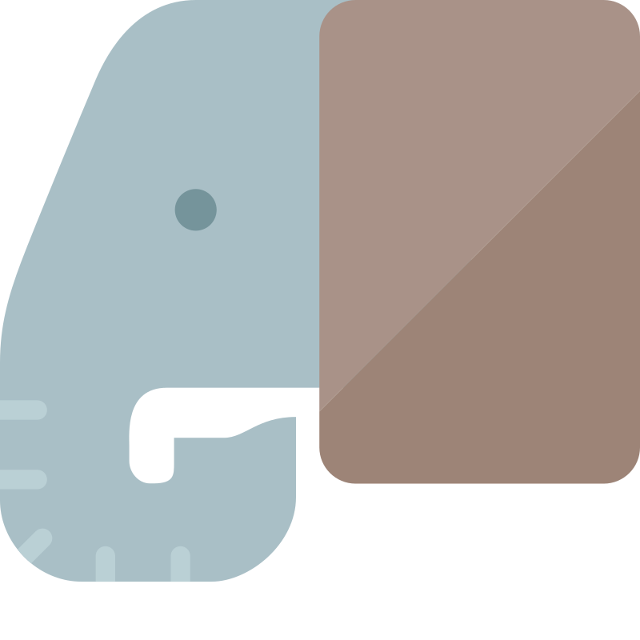
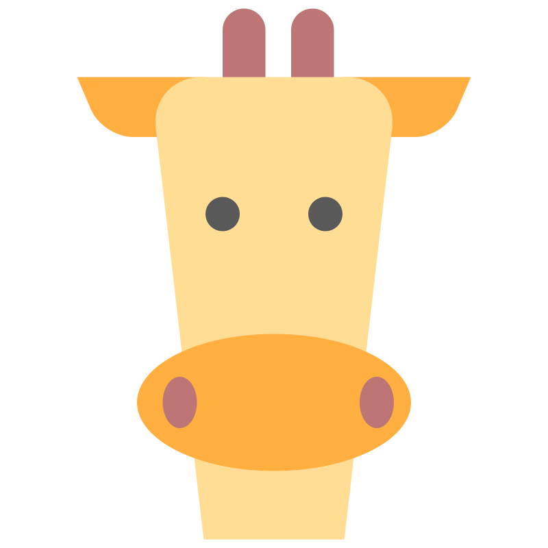

Today
0 tasks
=======
<<<<<<< Updated upstream

>>>>>>> Stashed changes
No tasks for today
Tomorrow
0 tasks
=======
<<<<<<< Updated upstream
=======
>>>>>>> Stashed changes

>>>>>>> Stashed changes
No tasks for tomorrow
Future
No future tasks scheduled
June 16-22, 2025
Mon
16
Tue
17
Wed
18
Thu
19
Fri
20
Sat
21
Sun
22
Pomodoro Timer
25:00
Focus
Session 1 of 4
Today's Tasks
Timer Settings
🎉 Focus Session Complete!
Great work! Here's your session summary:
0
Tasks Completed
0
Tasks Remaining